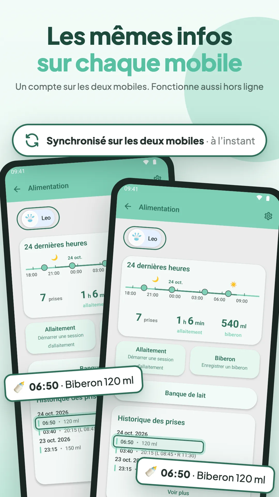

Sur cette page · 9 sections
En bref
Se relayer, ce n'est pas être tous les deux à moitié réveillés toute la nuit : c'est que chacun ait un bloc de sommeil d'affilée pendant que l'autre est de garde. Le plus simple est de couper la nuit en deux (par exemple, de 21 h à 2 h et de 2 h à 7 h, des horaires donnés à titre indicatif). Si vous allaitez, le ou la partenaire peut tout faire sauf la tétée, ou donner une tétée avec du lait tiré quand l'allaitement est bien installé. Et noter les repas et les siestes dans un endroit que vous voyez tous les deux évite le « quand a-t-il mangé ? » à chaque relais.
- Objectif
- Un bloc d'affiléepour chacun, chaque nuit
- Relais simple
- Nuit coupée en deux21 h-2 h / 2 h-7 h
- Avec allaitement
- Tout sauf le seinou une tétée de lait tiré
- Au moment du relais
- Un suivi communquand il a mangé et combien il a dormi
Pourquoi se relayer fonctionne
- Chacun peut dormir un bloc sans interruption. Avec un plan, celui qui n'est pas de garde dort sans être réveillé par bébé, et celui qui l'est sait que c'est son tour. Le NHS lui-même propose de se relayer pour dormir sans être dérangés.
- L'autre parent construit son propre lien. Donner à manger, laver, changer et endormir bébé, c'est une façon de le connaître et d'être proche de lui. Les études associent l'implication du père ou du ou de la partenaire dans les soins à un lien plus fort avec le bébé, y compris sans allaitement.
- Moins de charge pour celle qui se remet de l'accouchement. Après l'accouchement, le corps a besoin de temps pour récupérer, et sans plan, presque toute la nuit retombe en général sur la mère.
- Mal dormir et dépression du post-partum vont de pair. Les revues de la littérature constatent que les problèmes de sommeil et la dépression du post-partum sont associés, même si l'on ne sait pas bien lequel cause l'autre. Protéger le sommeil de chacun est une façon simple de prendre soin l'un de l'autre.
Se relayer la nuit avec un nouveau-né : 3 exemples d'horaires
Il n'y a pas d'horaire idéal. Choisissez celui qui convient à vos emplois du temps et à vos rythmes de sommeil, testez-le une semaine, puis ajustez. Les horaires des exemples sont indicatifs. L'essentiel est que celui qui n'est pas de garde puisse vraiment dormir : une autre pièce ou des bouchons d'oreilles, et le téléphone en silencieux.
1. Nuit coupée en deux (la plus courante)
Chacun dort environ 5 heures d'affilée. Celui qui se lève tôt pour travailler prend le premier tour.
2. Une tétée chacun (biberon ou lait tiré)
Utile avec un nouveau-né qui mange souvent la nuit : chacun fait les tétées de son créneau.
3. Nuits en alternance ou week-ends
Convient souvent mieux quand bébé se réveille moins. Le week-end, une grasse matinée chacun.
Comment la répartition change selon l'âge
| Âge | Comment sont les nuits | Relais qui fonctionne en général |
|---|---|---|
| 0-3 mois | Il mange très souvent, de jour comme de nuit. | Nuit coupée en deux ou une tétée chacun. En journée, siestes à tour de rôle pour récupérer. |
| 3-6 mois | Les périodes de sommeil plus longues commencent, avec des hauts et des bas. | Nuit coupée en deux ; celui qui est de garde fait aussi le premier réveil. |
| 6-12 mois | Moins de tétées la nuit ; réveils dus aux dents, aux régressions ou à la maladie. | Nuits en alternance, l'autre en renfort les mauvaises nuits. |
Ces âges sont indicatifs : chaque bébé va à son rythme et se réveiller la nuit est normal pendant toute la première année. Pour savoir combien votre bébé devrait dormir à chaque âge, consultez notre routine de sommeil du bébé par âge, et pour organiser le reste de la journée avec un nouveau-né, la routine quotidienne du nouveau-né.
Le partage en journée compte aussi
Les nuits pèsent le plus, mais la fatigue s'accumule avec tout le reste. Répartir des tâches fixes évite de devoir les négocier chaque jour :
| Tâche | Exemple de répartition |
|---|---|
| Bain | Toujours la même personne : cela devient son moment avec bébé. |
| Rituel du coucher | Un jour sur deux, pour que bébé s'endorme avec vous deux. |
| Repas solides (dès 6 mois) | Celui qui n'allaite pas s'occupe du dîner. |
| Rendez-vous chez le pédiatre et vaccins | Celui qui peut y aller ; l'autre lit les notes ensuite. |
| Maison : courses, dîners, lessives | Celui qui a eu le tour de nuit le plus dur en fait moins ce jour-là. |
En cas d'allaitement maternel
L'allaitement n'empêche pas de se relayer ; il change ce que fait chacun.
- Tout sauf le sein : le ou la partenaire se lève, change la couche, amène bébé au lit pour la tétée, lui fait faire son rot et le rendort. La mère donne seulement le sein et continue de dormir. Le NHS le résume ainsi : le ou la partenaire peut s'occuper des couches et habiller bébé le matin pour que la mère puisse se rendormir.
- Une tétée avec du lait tiré : quand l'allaitement est bien installé, le ou la partenaire peut de temps en temps donner une tétée de nuit au biberon pour que la mère dorme un bloc plus long. Si vous hésitez sur le moment de commencer le biberon, demandez à votre sage-femme ou à une consultante en lactation.
- Pour éviter les seins trop pleins : la production de lait s'adapte à ce que demande bébé, et si le sein reste de nombreuses heures sans être vidé, il peut devenir très plein ou inconfortable. C'est pourquoi beaucoup de mères tirent un peu de lait près de l'heure de la tétée que fait le ou la partenaire, et c'est ce lait qui est donné. Tirer son lait sert aussi à soulager un sein désagréablement plein.
En cas de doute, une sage-femme ou une consultante en lactation vous aide à l'adapter à votre bébé.
Le relais sans questions
À 2 h du matin, personne ne se souvient de l'heure du dernier repas. Connectez-vous tous les deux à Raffy avec le même compte Google (Paramètres → Compte et synchronisation) et vous verrez les mêmes repas et les mêmes siestes sur votre téléphone. La synchronisation se fait toute seule, mais pas instantanément : laissez-lui quelques instants si vous venez de noter quelque chose. C'est gratuit.

Si vous n'utilisez pas encore d'appli, nous comparons les options dans les meilleures applis de suivi du bébé pour Android.
Sécurité et quand demander de l'aide
- Ne vous endormez jamais avec bébé sur un canapé ou dans un fauteuil. Le risque de mort subite est bien plus élevé quand un bébé dort avec un adulte sur un canapé ou dans un fauteuil. Si vous sentez vos yeux se fermer pendant une tétée, remettez bébé dans son lit ou réveillez votre conjoint(e).
- Si vous conduisez le lendemain après une très mauvaise nuit de garde, laissez conduire l'autre ou attendez d'être plus reposé.
- Demandez de l'aide si l'un de vous deux est triste ou sans espoir presque tous les jours, ne prend plaisir à rien, n'arrive pas à dormir même quand bébé dort, ou a des pensées de se faire du mal ou de faire du mal au bébé. Et cela n'arrive pas qu'aux mères : dans les études, environ 10 % des pères ont eu une dépression pendant la grossesse ou la première année du bébé, et c'est plus fréquent vers 3-6 mois.
- Qui appeler : votre sage-femme, votre médecin traitant ou votre pédiatre. En cas de pensées de se faire du mal, appelez le 3114 (numéro national de prévention du suicide, gratuit, accessible 24 h/24 et 7 j/7) ou le 15 ou le 112 en cas d'urgence.
Cet article est éducatif et ne remplace pas l'avis d'un professionnel de santé.
Questions fréquentes
Comment répartir les nuits avec un nouveau-né ?
Le plus simple est de couper la nuit en deux créneaux d'environ 5 heures (par exemple, de 21 h à 2 h et de 2 h à 7 h). Celui qui est de garde s'occupe de tous les réveils de son créneau et l'autre dort sans interruption.
Peut-on se relayer si j'allaite ?
Oui. Le ou la partenaire peut tout faire sauf la tétée (change, rot, rendormissement) ou, quand l'allaitement est bien installé, donner une tétée avec du lait tiré. Dans ce cas, il est conseillé que la mère tire un peu de lait près de cette heure pour que ses seins ne deviennent pas désagréablement pleins.
Vaut-il mieux alterner les nuits ou couper chaque nuit ?
Avec un nouveau-né, il vaut généralement mieux couper chaque nuit, car personne ne tient une nuit entière de tétées fréquentes. Quand bébé se réveille moins, les nuits en alternance permettent à chacun de dormir une nuit complète.
Comment savoir ce qui s'est passé pendant le tour de l'autre ?
En notant chaque repas et chaque sieste dans un endroit que vous voyez tous les deux, comme une appli de suivi partagée. Ainsi, le relais ne dépend pas de ce dont se souvient quelqu'un à moitié endormi.
Et si l'un de nous travaille à l'extérieur ?
Celui qui travaille peut prendre le premier créneau de la nuit et dormir d'une traite la seconde moitié, et compenser avec plus de tâches en soirée et le week-end. L'important est de décider la répartition ensemble et de la revoir toutes les quelques semaines.
Sources
- NHS (Royaume-Uni)Sleep and tiredness after having a baby (en anglais)
- Ready to Relate · Bradford District Care (NHS)Understanding your baby's sleep (en anglais)
- NHS (Royaume-Uni)Expressing and storing breast milk (en anglais)
- NHS (Royaume-Uni)Postnatal depression (en anglais)
- Association espagnole de pédiatrie · Comité de l'allaitement maternelRecommandations sur l'allaitement maternel (en espagnol)
- American Academy of Pediatrics · HealthyChildren.orgA parent's guide to safe sleep (en anglais)
- Health Service Executive (Irlande)Recovering after the birth (en anglais)
- 3114 · Numéro national de prévention du suicide3114 : numéro national de prévention du suicide
- JAMA (2010)Paulson et Bazemore. Prenatal and postpartum depression in fathers and its association with maternal depression: a meta-analysis (en anglais)
- JOGNN (2015)Bhati et Richards. A systematic review of the relationship between postpartum sleep disturbance and postpartum depression (en anglais)
- Family Practice (2025)Yıldırım et Şahin. Does father involvement affect attachment and maternal depression and quality of life? Essai randomisé (en anglais)
- Irish Journal of Medical Science (2026)Akça et Tuncay. Fathers' involvement in infant care and infant attachment levels (en anglais)
Article vérifié à partir de ces sources le 17 nov. 2026. Contenu éducatif, pas un avis médical. Politique éditoriale